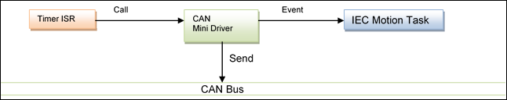
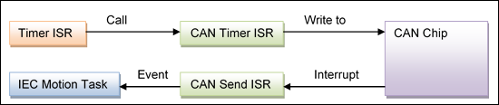

5.8.11. External CAN Sync¶
By default, CAN Sync packets are sent cyclically from the IEC bus cycle task. This means that, under bad circumstances, the CAN Sync packet will have a jitter which is equal to the jitter of this cyclically called task.
In order to generate a more accurate sync signal, it is possible to generate those packets externally from a hardware timer and to trigger the CAN task from this timer.
5.8.11.1. CAN L2 API¶
When sync is enabled in a CAN project, the 3S CANOpen stack calls tries to enable the external sync mechanism of the CAN driver. This will be successful if the driver implements the following two functions of the CAN L2 driver API:
CMD_SetBlock()
CMD_SetCycle()
The function CMD_SetBlock() is called to pass the sync packet down to the driver. CMD_SetBlock() is getting a block handle from a block which contains the sync packet. This function takes control over the passed block handle. This control is given back to the calling function at the next call of CMD_SetBlock().
The function CMD_SetCycle() is called by the CAN L2 to define the cycle time in which a sync packet will be generated. This time value is given in microseconds and should be used to program a hardware timer.
5.8.11.2. Timer ISR¶
Within the timer ISR, the CAN driver needs to send the packet to the CAN. After a send interrupt has signaled that the sync packet was send, the driver needs to send an event to the motion task.
CAN Timer ISR example:
s_pClonedSyncBlock = CAL_CL2_MsgClone( CanNet, pSavedSyncBlock,
&error );
if(error == CL2_NO_ERROR) {
CMD_Send( CanNet, s_pClonedSyncBlock, 0, 0);
}
CAN Send ISR:
if(s_pSyncBlockCloned == hBlock) {
/* Wake up the Motion Task */
if((s_hEventCanSync != RTS_INVALID_HANDLE)) {
CAL_SysEventSet(s_hEventCanSync);
}
}
5.8.11.3. Motion Cycle Time¶
When you are using a target with external sync, you are creating a motion task which is triggered by an external event. But this also means that you won’t define a cycle time for this task. This time will be implicitly defined with the external sync period.
But, because the SoftMotion stack needs to know the cycle time of the task on which it is running, you need to set this time within your CAN driver manually. This can be done directly in the function CMD_SetCycle(), because in this function you get the sync period.
To get the task handle of the motion task, as well as the sync event, you need to register on the event „TaskCreateDone” of „CmpSchedule”. You should search for your event name and save a handle to this event, as well as to the task handle, in a static variable of the driver.
Example of CMD_SetCycle():
/* set cycle time of IEC task */
if(s_hTaskCanSyncInfo != NULL)
s_hTaskCanSyncInfo->tInterval = dwCycle;
/* program hardware timer */
…